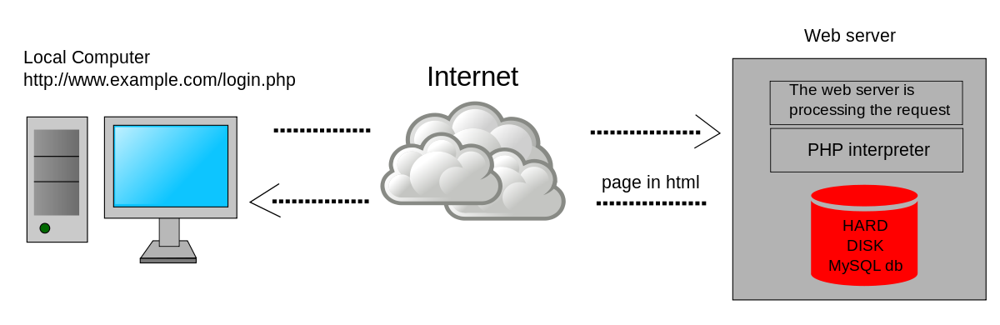
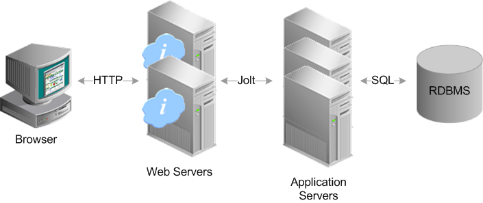

TOPICS
CLIENT SERVER CONCEPTS
The phrases 'client/server', 'distributed computing' and 'cooperative processing' have been in use for some time, but in many ways they are open to interpretation. In fact, the principle behind client/server computing has been a fundamental part of the COBOL language since the very beginning, but today's jargon tends to mask the actual functions being performed.
Essentially, a client is a consumer of services, and a server provides services. Thus the term 'client' could be more accurately defined as 'service requester', and server as 'service provider', with the requester 'calling' the provider for the required service.
In COBOL, the CALL statement is the method used to invoke such requests, but the similarity between the standard CALL statement and client/server functionality may not always be immediately apparent.
The CALL statement is usually associated with calls to local functions (that is, CALLed programs which reside on the same machine as the CALLing program), which can be regarded as services. Thus, CALLing a date validation routine is actually requesting a validation service from a particular module.
CALLs don't necessarily have to be to local functions; they can be made to remote functions (that is, CALLed programs located on a different machine from the CALLing program). These are often referred to as 'remote procedure CALLs' or RPCs.
The client/server model extends the COBOL CALL scenario in the following ways:
Many subprograms can be grouped to provide the 'service'.
The client does not necessarily need to be aware of the actual subprograms which comprise the service.
A server can provide multiple services.
Multiple clients can request services from a single server.
The location of the server program is typically remote (that is, on a separate machine) from the requesting program.
A single client can request services from multiple servers.
Several distributed processing functions, such as presentation logic (screen handling), business logic (data processing) and data access (file/database manipulation), logically suggest themselves as candidates for the client/server model. Middleware (communications/transaction processing) is then needed to connect these distributed functions.
COMPONENTS OF WEB APPLICATIONS
All web-based database applications have three primary components: A web browser (or client), a web application server, and a database server.
Web-based database applications rely on a database server, which provides the data for the application. The database server sometimes also provides business logic in the form of stored procedures. Stored procedures can offer significant performance advantages, especially in a multi-tiered architecture. In addition to database servers, other enterprise information system components include IMS databases, IBM® MQ messages, and CICS® records.
The clients handle the presentation logic, which controls the way in which users interact with the application. In some cases, the client validates user-provided input. Web applications sometimes integrate Java™ applets into the client-side logic to improve the presentation layer.
Web-based database applications rely on a database server, which provides the data for the application. The database server sometimes also provides business logic in the form of stored procedures. Stored procedures can offer significant performance advantages, especially in a multi-tiered architecture. In addition to database servers, other enterprise information system components include IMS databases, IBM® MQ messages, and CICS® records.
The clients handle the presentation logic, which controls the way in which users interact with the application. In some cases, the client validates user-provided input. Web applications sometimes integrate Java™ applets into the client-side logic to improve the presentation layer.
TYPES OF WEB CONTENTS
1. Blogs
Blogging is an invaluable tool for driving visitors to your website, and building awareness about you and your brand.
Generally written from a more personal and informal point of view than content assets, a blog is a great way to connect with readers. It is the perfect vehicle for providing them with information that not only answers a question or solves a problem, but also helps to establish you as a trusted authority on the topic.
Blogs are also a great way to keep your web content fresh, enabling you to post new content on a regular basis and helping you continue to rank in SERPs (search results).
2. Content assets
This broad category of web content includes collateral and similar resources you have already invested in and can now repurpose to help draw visitors to your website.
Some examples are product brochures, user manuals, slide presentations, white papers, industry reports, case studies, fact sheets, ebooks, webinars, and podcasts.
The goal is to extend the value of these assets by using them across different digital media and channels. The content can be broken up into smaller pieces and distributed in new ways, such as via blog posts, tweets, video clips, email blasts, search engine ads, and other channels.
3. Calls to action
A call to action (CTA) is a prompt designed to get your website visitor to take some immediate action, such as make a purchase or get more information.
4. Landing pages
Landing pages are destinations — the web pages where visitors are sent when they click on a hyperlink, such as a search engine result, a social media ad, a CTA, or a special offer on your website.
These pages are designed to help you convert website visitors into leads by providing a way to capture their contact information.
For example, suppose you want to build your authority as an SME by offering a free white paper to your website visitors. When they click on the offer link, it can take them to a landing page where the content of white paper is described in more detail and they can download the paper by submitting an email address.
5. Testimonials
One of the best ways to appeal to prospects and build credibility is with relatable success stories from their peers. That is what makes customer testimonials such valuable web content.
Whether your goal is to create formal case studies, include real-life customer scenarios in a white paper, or post short video clips on Twitter or Facebook, having a process in place to identify happy customers and capture their feedback is a great idea.
TIP: Don’t hide all your valuable customer feedback on one testimonials page. Include testimonials throughout your site to serve as social proof that validates your claims.
6. Video & audio content
With the ability to embed video and audio clips so that anyone can view and listen without leaving the webpage, digitally recorded media are increasingly popular web content tools. It is a great way to offer content such as how-tos, webinars, podcasts, and seminars.
7. Visual content
According to the Social Science Research Network, 65% of people are visual learners. So, it makes good sense to incorporate visual web content into your website.
In addition to having CTAs on your web pages, you can include them in other marketing content you use to drive traffic to your website, such as blogs, emails, social media posts, and e-newsletters.
OVERVIEW-HTTP-HTTP REQUEST-RESPONSE
The Hypertext Transfer Protocol (HTTP) is an application-level protocol for distributed, collaborative, hypermedia information systems. This is the foundation for data communication for the World Wide Web (i.e. internet) since 1990. HTTP is a generic and stateless protocol which can be used for other purposes as well using extensions of its request methods, error codes, and headers.
Basically, HTTP is a TCP/IP based communication protocol, that is used to deliver data (HTML files, image files, query results, etc.) on the World Wide Web. The default port is TCP 80, but other ports can be used as well. It provides a standardized way for computers to communicate with each other. HTTP specification specifies how clients' request data will be constructed and sent to the server, and how the servers respond to these requests.

The HTTP protocol is a request/response protocol based on the client/server based architecture where web browsers, robots and search engines, etc. act like HTTP clients, and the Web server acts as a server.
Client
The HTTP client sends a request to the server in the form of a request method, URI, and protocol version, followed by a MIME-like message containing request modifiers, client information, and possible body content over a TCP/IP connection.
Server
The HTTP server responds with a status line, including the message's protocol version and a success or error code, followed by a MIME-like message containing server information, entity meta information, and possible entity-body content.
GENERATION OF DYNAMIC WEB PAGES

A server-side dynamic web page is a web page whose construction is controlled by an application server processing server-side scripts. In server-side scripting, parameters determine how the assembly of every new web page proceeds, including the setting up of more client-side processing.
A client-side dynamic web page processes the web page using JavaScript running in the browser as it loads. JavaScript can interact with the page via Document Object Model, or DOM, to query page state and modify it. Even though a web page can be dynamic on the client-side, it can still be hosted on a static hosting service such as GitHub Pages or Amazon S3 as long as there isn't any server-side code included.
A dynamic web page is then reloaded by the user or by a computer program to change some variable content. The updating information could come from the server, or from changes made to that page's DOM. This may or may not truncate the browsing history or create a saved version to go back to, but a dynamic web page update using AJAX technologies will neither create a page to go back to, nor truncate the web browsing history forward of the displayed page. Using AJAX, the end user gets one dynamic page managed as a single page in the web browser while the actual web content rendered on that page can vary. The AJAX engine sits only on the browser requesting parts of its DOM, the DOM, for its client, from an application server.
DHTML is the umbrella term for technologies and methods used to create web pages that are not static web pages, though it has fallen out of common use since the popularization of AJAX, a term which is now itself rarely used. Client-side-scripting, server-side scripting, or a combination of these make for the dynamic web experience in a browser.
APPLICATION SERVERS
Applications come in all shapes, sizes, and use cases. In a world where we rely on a host of critical business processes, application servers are the high-powered computers providing application resources to users and web clients.
Application servers physically or virtually sit between database servers storing application data and web servers communicating with clients. App servers and akin middleware are the operating systems supporting an application’s development and delivery. Whether it’s a desktop, mobile, or web app, application servers play a critical role in connecting a world of devices.
We look at how application servers fit into a network’s service architecture, how app servers support web servers, native applications, and mobile apps, and the current state of application servers in the 2020s.

Billions of web clients make HTTP requests every day, expecting instant access to you-name-the-app. Headspace during the morning routine, Google Docs for the extensive report, Twitter during a coffee break, no matter the application in use, it’s being pulled from an application server and delivered via a web server.
Web servers are responsible for serving web clients HTTP requests with HTTP responses. Unlike app servers, the web server design is light enough to process static data requests for multiple applications (or websites) while maintaining security. Dynamic requests, often in the form of applications, require additional assistance.
WEB SECURITY
Web security must be a critical priority for every organization. Along with email, the web is one of the top vectors for cyberattacks. The web and the use of DNS services specifically are part of 91% of all malware attacks, and email and web together are a key part for 99% of successful breaches.
While the importance of web security is undisputed, protecting against web security threats grows more challenging each day. From thwarting attacks to dealing with limits in skills and resources, IT security departments face serious challenges when trying to secure the web.
In the past, security teams have deployed a collection of on-premises solutions to manage email and web security. But increasingly organizations are turning to comprehensive email and web security solutions – via integrated, cloud-based technologies that simplify the task and reduce the cost of reducing risk. And because attackers often leverage email and web channels together, a seamless and scalable strategy for protecting both is essential.